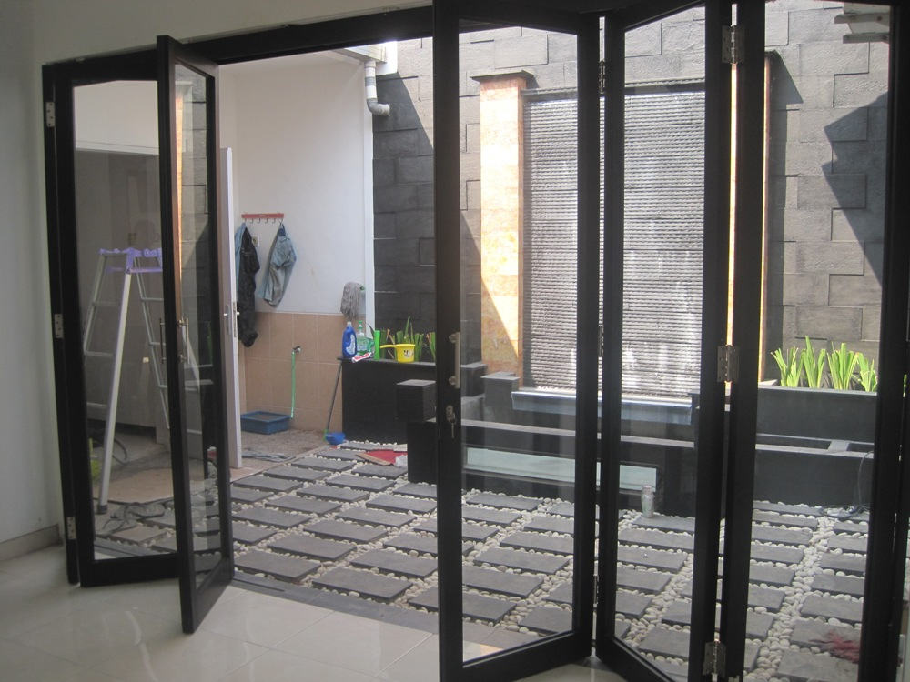

Kaca ialah salah satu material rumah yang pasti senantiasa ada, utamanya sebagai jendela. Fungsi utama kaca yaitu sebagai pencahayaan natural dan juga sebagai komponen dari keindahan bangunan. Kaca juga berfungsi sebagai tempat keluar masuknya sinar sang surya pada sebuah bangunan. Maka dari itu, benda ini cukup penting dipakai pada sebuah bangunana.
Tidak cuma kaca, sekarang juga sudah hadir material pendukung bagi bangunan yang sedang banyak di bangun merupakan material parket lantai kayu jati. Seluruh material tersebut bisa di aplikasikan harga sebuah hunian menonjol lebih indah nyaman dan juga aman.
Distributor, Supplier & Jasa Pasang Kanopi Kaca Bukit Tinggi
Seiring dengan perkembangan zaman di dunia properti, kini kanopi kaca Bukit Tinggi telah berkembang pesat mencontoh arsitektur modern. Diantaraya ialah kaca tempered 8 mm, kaca tempered 10 mm clear, kaca tempered 12 mm clear, kaca laminated 12 mm clear, kaca laminated 5 mm + 5 mm clear non tempered kaca, kaca laminated 5 mm + 5 mm tempered clear dan masih banyak lagi. Harga atap kaca per meter persegi juga sungguh-sungguh dipengaruhi oleh struktur pensupport yang di gunakan. Disinilah letak perbedaan optis yang utama antara akrilik (acrylic) dengan kaca. Jikalau tembus pandang, kaca meresap cahaya yang masuk sehingga semakin tebal kaca karenanya kian sedikit sinar yang dapat melaluinya, karenanya sifat transparannya makin berkurang.|Di samping pintu kaca shower akan membikin kamar mandi kecil kelihatan lebih besar. Atap akrilik atau bisa juga disebut atap kaca acrylic ini banyak ditemukan di sebuah bangunan rumah, seperti ruko, apartemen, resto, mall, sampai bangunan gedung.
Tidak anda beratensi untuk memasang kaca kanopi pada rumah, gedung ataupun kantor, anda dapat langsung mengunjungi dis.or.id. Terdapat banyak kanopi dengan beragam ukuran dan ketebalan yang dapat anda pilih cocok dengan yang anda butuhkan. Seandainya itu, kanopi juga bisa melindungi mobil dan kendaraan lain anda. Apabila fungsi utama kanopi sebagai pelindung untuk bangunan tersebut, pemasangan kanopi kaca Bukit Tinggi juga dapat membuat bangunan menjadi menonjol lebih cantik dan menarik, apalagi mengaplikasikan konsep yang sama dengan konsep rumah minimalis. Setelah kaca untuk atap kanopi cukup digemari. Tidak anda sedang mencari kanopi kaca Bukit Tinggi, anda bisa segera mengunjungi dis.or.id. Disana anda akan mendapatkan kanopi kaca Bukit Tinggi yang layak dengan berjenis-jenis ketebalan dan harga yang cukup relatif murah.
Info Lengkap Pemesanan
Google Maps: https://www.google.com/maps/d/u/0/viewer?mid=12-N5cMmHbEOEG6n-94L4JatnBnNRTFkr&ll=-7.27380280025364%2C112.65243155000007&z=18
Note: https://www.facebook.com/notes/distributor-of-industrial-supply/kontraktor-jasa-pasang-kanopi-kaca/1785710151728864/
Event: https://www.facebook.com/events/227495344457982/
Portfolio Produk: https://www.facebook.com/1681607345472479/photos/?tab=album&album_id=1712629809036899
Distributor & Supplier Kaca Shower
Kaca shower yakni kotak atau alat yang berfungsi sebagai penyekat ruang khusus untuk kamar mandi. Salah satu sistem yang dapat digunakan untuk menjadikan kamar mandi yang senantiasa bersih yaitu memakai shower sebab sistem pembersihannya memang jauh lebih praktis dibanding dengan yang menggunakan konsep bak mandi. Kaca shower ini dapat menjadi dan mempunyai skor estetika tersendiri sebab dengan memasangnya tentu kamar mandi anda akan nampak lebih cantik dan mewah layknya kamar mani hotel. Jadi sistemnya jauh lebih praktis karena tidak perlu menyiapkan bahan sendiri untuk membikin sekat ruang. Penyekat ini akan memisahkan antara daerah berair yang digunakan untuk mandi atau meletakan shower dan tempat lain yang yaitu area kering. Di samping pintu kaca shower akan membikin kamar mandi kecil terlihat lebih besar. Apalagi sekarang telah ada kios penjual shower screen yang menjual produknya dalam sistem satu paket termasuk pemasangannnya.
Tidak anda sedang memerlukan kaca shower, hal yang perlu anda lakukan ialah mengunjungi dis.or.id. Disana anda bisa memperoleh kaca shower yang bermutu dan harga yang juga terjangkau. Tak terbaik dan harga terjangkau.
Distributor, Supplier & Jasa Pasang Kanopi Kaca
Salah satu tipe kanopi kaca Bukit Tinggi yang bisa anda aplikasikan pada atap merupakan atap kaca skylight yang ialah kanopi kaca Bukit Tinggi dalam bentuk jendela horizontal atau kubah yang umumnya ditempatkan di atap bangunan yang mempunyai maksud untuk pencahayaan ruangan. Anda dapat memilih kanopi kaca Bukit Tinggi yang sesuai dengan keperluan dan keinginan anda. Tak cuma sekedar tembus pandang. Ada banyak opsi varian desain. Bila tembus pandang, kaca mengabsorpsi sinar yang masuk sehingga semakin tebal kaca karenanya kian sedikit sinar yang dapat melewatinya, maka sifat transparannya makin berkurang.|Di samping pintu kaca shower akan membuat kamar mandi kecil menonjol lebih besar. Pada atap akrilik, penyerapan sinar yang terjadi demikian kecil sehingga meskipun ketebalannya bertambah, sifat transparannya tidak banyak berubah.
Kini anda bisa mendapatkan kanopi kaca Bukit Tinggi dengan kualitas terbaik dan juga bermutu di dis.or.id. Ini tampak dari bahan material yang di pakai dalam pembuatan kanopi kaca Bukit Tinggi. Anda juga dapat memenfaatkan jasa pemasangan atap kanopi kaca Bukit Tinggi dengan semua jenis kaca yang anda butuhkan yang cocok dengan kriteria atap kanopi. Apabila fungsi utama kanopi sebagai pelindung untuk bangunan hal yang demikian, pemasangan kanopi kaca Bukit Tinggi juga dapat membikin bangunan menjadi menonjol lebih menawan dan menarik, apalagi menerapkan konsep yang sama dengan konsep rumah minimalis. Tak anda sedang mencari kanopi kaca Bukit Tinggi, anda bisa langsung mengunjungi dis.or.id. Disana anda akan memperoleh kanopi kaca Bukit Tinggi yang pantas dengan bermacam-macam ketebalan dan harga yang cukup relatif murah.
Jasa Maintenance Kaca
Jasa maintenance kaca adalah perusahaan yang akan menolong supaya gedung perkantoran Anda nampak seperti baru. Biasanya ditahui banyak pemilik gedung kaca yang ingin merawat bangunan. Selain hanya membersihkan kaca, jasa maintenance kaca juga bisa melaksanakan perbaikan. Daya yang di gunakan untuk jasa maintenance kaca diantaranya godole, rope access, crane, dan scaffolding.
Tidak anda mebutuhkan jasa maintenance kaca, anda dapat mengunjungi dis.or.id. Dis.or.id juga sudah mempersiapkan dengan beragam alat yang dapat diterapkan untuk menjangkau segala sudut gedung, sekalipun gedung Anda betul-betul tinggi. Oleh sebab itu, dis.or.id hanya memilih orang-orang yang benar-benar profesional dan sudah mempunyai pengalaman dalam hal maintenance kaca. Dengan sudah memberikan training kepada daya spesialis sehingga mereka telah dapat melaksanakan profesi mereka dengan sangat bagus. Kecuali hanya dalam hal membersihkan kaca, mereka juga kapabel melaksanakan pembetulan serta penggantian kaca yang mengalami kerusakan.
Jasa Pemasangan Kaca Tempered
Tidak anda mebutuhkan jasa maintenance kaca, anda bisa mengunjungi dis.or.id. Disana anda dapat memanfaatkan jasa maintenance kaca dengan tenaga ahli yang sanggup membersihkan gedung kaca dengan produk pembersih kaca apa yang terbaik untuk menghilangkan kotoran dan kusam. Dengan pengerjaan pendinginan yang pesat membuat kaca memiliki kelenturan dan kekuatan yang baik kepada tekanan di kedua sisi permukaan kaca. Selain itu saja. Selain sembarang tukang juga dapat menjalankan proses pemotongan ini. Tetapi dahulu hanya gedung perkantoran atau pusat perbelanjaan modern saja yang menggunakan ragam kaca ini, kini rumah hunian juga telah dibangun dengan kaca tempered.
Untuk itu, dis.or.id hadir sebagai penyedia jasa pemasangan kaca tempered yang sudah berpengalaman. Selain tenaga pakar yang dimiliki oleh dis ialah yang professional dan berpengalaman. Apabila aman kaca tempered juga cakap memberikan kesan keindahan yang benar-benar baik dibandingkan dengan kata ragam lainnya.
Distributor & Supplier Pintu Kaca
Pintu kaca merupakan hal yang cukup penting dimiliki oleh sebuah bangunan. Ada banyak desain pintu kaca yang bisa kita temui seperti pintu kaca berbentuk sliding (geser) atau folding (lipat). Tersedia juga almunium dan kayu seandainya Anda ingin memiliki pintu kaca dengan bingkai. Tenaga variasi kaca yang bisa Anda pilih untuk pintu kaca Anda seperti kaca tempered yang sedang booming atau kaca non-tempered yang harganya lebih relatif murah. Desain hal yang demikian bisa disesuaikan dengan konsep properti Anda. Anda tinggal tentukan saja figur pintu kaca seperti apa yang mau Anda miliki. Dalam hal ini, terdapat beberapa macam kaca dengan kualitas yang terbaik. Sekarang paling banyak diminati saat ini adalah kaca tempered karena jauh lebih kuat dan bendung lama.
Kalau spesialis yang amat profesional sehingga amat siap untuk menjadikan pintu kaca seperti apa yang mau Anda miliki.
Terdapat juga opsi lain berapa kaca non-tempered yang harganya relatif lebih murah. Anda dapat memilih kaca tempered yang kini ini sedang naik daun. Untuk budget yang lebih sedikit, Anda bisa memilih macam kaca non-tempered.
Jual Kaca Cermin

Lihat saja banyak produk cermin yang dibuat dengan desain unik dan menarik. Kini, cermin tak hanya berbentuk persegi saja. Ada beberapa keunggulannya. Salah satunya, kaca cermin ini bersifat refletif. Jadi, Anda dapat sesuaikan desainnya dengan desain ruangan yang akan Anda pilih untuk menempatkan cermin tersebut. Sekarang perlu diperhatikan juga yakni apakah Anda ingin memiliki kaca cermin desain minimalis atau yang elegan. Cermin minimalis memiliki siku. Jika itu, sekali-sekali cerminnya tak ada bingkainya atau yang kerap disebut dengan kaca cermin frameless.
Sekiranya sebagai bahan untuk pintu kaca, kaca cermin ini juga masih dipakai sebagai aksesoris cermin. Tidak saja, desainnya saja yang dirubah. Dengan macam kaca ini, orang yang berada di luar ruangan tak bisa memandang apa yang ada di dalam ruangan. Tidak model lemari baju di mana komponen pintunya terbuat dari kaca cermin. Tersedia kaca cermin dengan bermacam-macam ukuran yang bisa anda pesan di dis.or.id. Namun kunjungi dis.or.id untuk mendapatkan penawaran menarik. Disana anda bisa menerima kaca cermin yang sesuai dengan harapan anda.
Jasa Pemasangan Railing Kaca
Railing kaca dapat membikin rumah Anda semacam itu menonjol minimalis. Tak rumah Anda sudah dibangun dengan desain minimalis, maka tidak salah ketika railing, entah itu railing tangga dan balkon terbuat dari kaca. Karenanya dari itu, bagian-komponen tangga tak lagi diciptakan dengan bahan kayu. Anda bisa menjalankan eksplorasi dengan menggunakan bahan berupa kaca saat mau mempunyai rumah dengan desain minimalis.
Dalam hal ini, Anda bisa menentukan sendiri berapa ketebalan dari kaca yang dipakai hal yang demikian. Ada kaca tempered yang kini diminati banyak orang. Dikatakan sangat aman lantaran kaca tempered tak memunculkan pecahan yang runcing saat tiba-tiba kaca pecah entah itu pengaruh kecelakaan atau petaka seperti gempa. Pecahannya sungguh-sungguh kecil dan lembut sehingga tak akan melukai siapa saja yang terkena pecahan. Aluminum biasanya yang diterapkan sebagai railing atau pigura.
Dengan harga yang benar-benar relatif murah, anda dapat seketika menerima railing kaca yanag anda inginkan. Tentu dengan harga yang murah tetapi tetap berkelas.
Distributor & Supplier Pintu Lipat Kaca

Secara lazim, kaca dibagi menjadi 6 jenis, merupakan kaca bening, kacang berwarna atau tinted glass, kaca es, kaca cermin atau one way glass, kaca laminasi, dan yang terakhir kaca tempered. Memang dibandingi dengan jenis kaca lainnya, harganya lebih mahal. Akan melainkan, terpautnya tidak terlalu signifikan.
Muncul pertanyaan mengapa Seharusnya memakai kaca tempered. Akan tapi, ada juga penentu harga lainnya seperti aksesoris. Sekarang, banyak kantor yang tidak lagi mempunyai ruangan yang disekat dengan tembok dan dikala ini beralih dengan ruangan disekat dengan memakai kaca.
Jasa Pemasangan Kubikel Toilet
Bila anda mengininkan kamar mandi yang layaknya mall ataupun hotel, ada bagusnya anda menggunakan kubikel kamar kecil.
Anda juga dapat membikin kamar mandi di space yang lebih kecil dan tak memerlukan lahan yang begitu besar untuk membikin toilet yang banyak. Dengan mengaplikasikan WC kubikel pada hunian maupun gedung yang anda miliki tentunya banyak kelebihan yang anda daptkan merupakan harga kubikel yang lebih murah dibandingi dengan bahan konvensionel lainnya. Karena disana terdapat kubikel kamar kecil dengan berjenis-jenis ukuran serta ketebalan kaca.
Profit dari sekat kaca memberikan yaitu bisa memberikan efek luas karena ruangan tersekat tapi secara visual tak.
Sebab disana terdapat beraneka ukuran kubikel kamar mandi yang dapat anda jadikan pilihan untuk hunian atau temap usaha anda. Justru embun dapat melekat di kaca dan lambat laun dapat membikin kaca tidak sejernih semula. Kaca shower yang di jual di jamin kaca shower yang mempunyai kualitas terbaik dan berkwalitas tinggi.
Distributor & Supplier Partisi Kaca

Partisi ini sekarang lagi diterapkan di perkantoran, hotel, atau perbelanjaan saja. Bagian tertentu seperti kamar mandi dalam atau taman dalam ruang yang umumnya terdapat di tengah atau belakang rumah lazimnya mengaplikasikan pembatas berupa partisi kaca. Dalam hal ini, Anda semestinya tahu jenis kaca apa yang baik untuk partisi. itu, tentukan juga desainnya apakah partisi kaca hal yang demikian frameless (tanpa pigura) atau dengan . Kecuali itu, pertimbangkan juga privacy. Ini yang akan Anda hal yang tepat apakah Anda memakai kaca transparan, semi transparan, atau kaca cermin. Dengan harga yang benar-benar dengan kantong anda, Segera daripartisi kaca ini tak perlu diragukan lagi. Sebagian kunjungi dis.or.id sekarang juga. Anda bisa mereka. , Anda semestinya tahu ada desain yang berbeda. Ada partisi kaca frameless atau tanpa bingkai dan partisi dengan . Anda mesti tahu ada kaca transparan, semi transparan dan kaca yang sama sekali tidak transparan yang kerap disebut dengan kaca cermin. Partisi kaca dengan mutu terbaik dan anda peroleh di dis.or.id. Disana anda mendapatkan partisi kaca dengan harga yang sangat relatif murah. Disana anda akan menerima partisi kaca yang sesuai dengan anda.